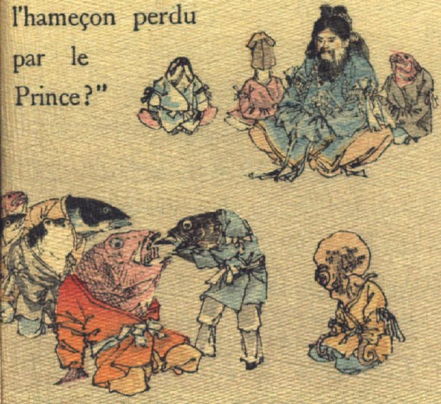

赤い魚の喉に刺さった釣り針を、黒い魚が取ろうとしている。背後の魚たちもその様子をうかがっている。山幸彦は後ろに魚やイカたちを従えて座り、様子を見守っている。
著作者：J. Dautremer／出典：親書誌：U426_nichibunken_0108：Le Prince Feu-Brillant et le Prince Feu-Luisant／日付：2006／資源識別子：U426_nichibunken_0108_0002_0000
Copyright (c)2010- International Research Center for Japanese Studies, Kyoto, Japan. All rights reserved.